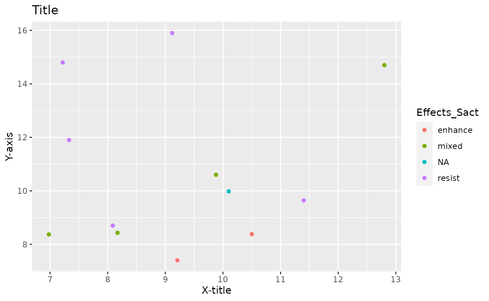
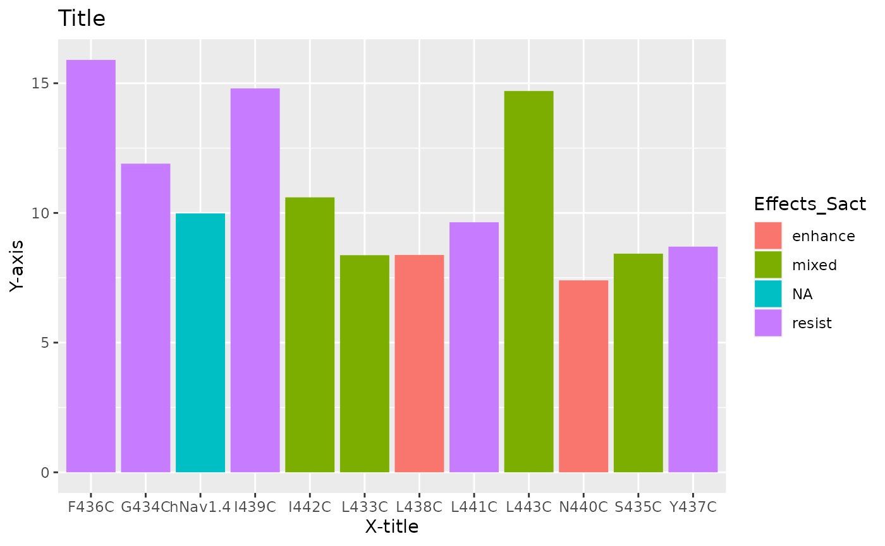

SodiumChannelTutorial.RmdThis package is installable by accessing the following code along with the listed packages:
devtools::install_github("madelinepye/sodium_channel.pkg")## Using github PAT from envvar GITHUB_PAT## Downloading GitHub repo madelinepye/sodium_channel.pkg@HEAD##
## ── R CMD build ─────────────────────────────────────────────────────────────────
## * checking for file ‘/tmp/RtmpM1zhtI/remotes154f4c6c7940/madelinepye-sodium_channel.pkg-ed49e6a/DESCRIPTION’ ... OK
## * preparing ‘pye.pkg’:
## * checking DESCRIPTION meta-information ... OK
## * checking for LF line-endings in source and make files and shell scripts
## * checking for empty or unneeded directories
## * building ‘pye.pkg_0.1.tar.gz’
## Warning: invalid uid value replaced by that for user 'nobody'## Installing package into '/tmp/RtmpyBTIbg/temp_libpath13160115e39'
## (as 'lib' is unspecified)
#install.packages("tidyverse")
#install.packages("ggplot2")
library(pye.pkg)
library(ggplot2)
library(tidyverse)## ── Attaching core tidyverse packages ──────────────────────── tidyverse 2.0.0 ──
## ✔ dplyr 1.1.4 ✔ readr 2.1.4
## ✔ forcats 1.0.0 ✔ stringr 1.5.1
## ✔ lubridate 1.9.3 ✔ tibble 3.2.1
## ✔ purrr 1.0.2 ✔ tidyr 1.3.0## ── Conflicts ────────────────────────────────────────── tidyverse_conflicts() ──
## ✖ dplyr::filter() masks stats::filter()
## ✖ dplyr::lag() masks stats::lag()
## ℹ Use the conflicted package (<http://conflicted.r-lib.org/>) to force all conflicts to become errorsIn this tutorial, we will be using this data set collected for the academic paper “Substituted cysteine scanning in D1-S6 of the sodium channel hNav1.4 alters kinetics and structural interactions of slow inactivation” by Jonathan M Beard, Penny E Shockett, John P O’Reilly (DOI: 10.1016/j.bbamem.2019.183129). This data set is what this package was designed to evaluate.
#install.packages("googlesheets4")
library(googlesheets4)
googlesheets4::gs4_deauth()
sodium_data <- read_sheet("https://docs.google.com/spreadsheets/d/1KkQl2t9AQ7L0yUngONNebEjbr-tVC3WLaHjdTLSHW-o/edit?usp=sharing")## ✔ Reading from SodiumChannelData2.## ✔ Range SodiumChannelData2.This R package is designed for manipulating and interpreting data collected from the sodium channel experiment mentioned above, which was used to evaluate the affects of amino acid mutations of a sodium channel. To do this, this package can create plots, manipulate data frames, and summarize data based on some techniques used to evaluate sodium channel voltage data.
This tutorial will be using the above data frame by which the package was designed for.
This function allows the user to select certain columns within the data set to allow a user to focus on particular aspects of the data frame. The function will return the selected columns as a new data frame. To do this, you must first create a value that is equivalent to string values that are the name(s) of the columns desired. Once you have created this variable, you will then use the following function with the data frame and the variable, as shown below.
library(pye.pkg)
selecting_data(data=sodium_data,columns=c("Effects_Sact", "Act_k", "SSFI_k", "SSSI_k"))## # A tibble: 12 × 4
## Effects_Sact Act_k SSFI_k SSSI_k
## <chr> <dbl> <dbl> <dbl>
## 1 NA 10.1 7.08 9.98
## 2 mixed 6.98 7.22 8.37
## 3 resist 7.33 7.2 11.9
## 4 mixed 8.17 8.04 8.43
## 5 resist 9.12 7.96 15.9
## 6 resist 8.09 10.4 8.7
## 7 enhance 10.5 8.17 8.38
## 8 resist 7.22 7.61 14.8
## 9 enhance 9.21 8.37 7.4
## 10 resist 11.4 7.51 9.64
## 11 mixed 9.88 8.07 10.6
## 12 mixed 12.8 7.01 14.7
# The names of the columns need to be in quotation marks.This function allows the user to summarize a continuous variable. By doing this, one can evaluate the numeric data trends a category of the data frame. The function returns a data frame of the summary, including a mean, minimum, and maximum values. To use this, you will need the data frame and the string value name of the numeric column of the data frame.
library(pye.pkg)
summarize_data(data = sodium_data, continuous_var = "Act_k")## # A tibble: 1 × 3
## mean_data min_data max_data
## <dbl> <dbl> <dbl>
## 1 9.23 6.98 12.8
# The column name needs to be in quotation marks.This function allows data to be described in terms of median for a data set that is based on averages. It returns a median value for a numeric column of a data frame. To use this, you will need to input the data frame and the string value name of the numeric column of the data frames.
library(pye.pkg)
median_calc(data = sodium_data, column = "Act_V0.5_mV")## # A tibble: 1 × 1
## median
## <dbl>
## 1 -17
# The column name needs to be in quotation marks.This function allows one to create a scatterplot of a data frame with the color of the points being determined based off of a categorical variable in the data frame. To use this you will need a data frame, the string value name of the numeric column of the data frame for the x-axis, the string value name of the numeric column of the data frame for the y-axis, and the string value name of the categorical column of the data frame for the color. You will also need a title as a string value and two string values for the x and y-axis titles.
library(pye.pkg)
splot_sodium(data = sodium_data, x_data = "Act_k", y_data = "SSSI_k",color = "Effects_Sact", title = "Title", x_title = "X-title", y_title = "Y-axis")
# The titles and column names must be in quotation marks.This function allows one to create a bar graph of a data frame with the color of the bars being determined based off of a categorical variable in the data frame. To use this you will need a data frame, the string value name of the numeric column of the data frame for the x-axis, the string value name of the numeric column of the data frame for the y-axis, and the string value name of the categorical column of the data frame for the color. You will also need a title as a string value and two string values for the x and y-axis titles.
library(pye.pkg)
bargraph_plot(data = sodium_data, x_data = "Channel", y_data = "SSSI_k", color = "Effects_Sact", title = "Title", x_title = "X-title", y_title = "Y-axis")
# The titles and column names must be in quotation marks.This function allows one to evaluate a data set through linear modeling. To use this, you will need a data frame and the string values of two columns of numeric data that you believe may have correlation.
library(pye.pkg)
linear_model(data = sodium_data, x_var = "Act_k", y_var = "SSSI_k")##
## Call:
## lm(formula = as.formula(paste({
## {
## x_var
## }
## }, "~", {
## {
## y_var
## }
## })), data = .)
##
## Residuals:
## Min 1Q Median 3Q Max
## -2.3274 -1.2381 -0.1391 1.0557 3.2603
##
## Coefficients:
## Estimate Std. Error t value Pr(>|t|)
## (Intercept) 8.40445 2.13763 3.932 0.00281 **
## SSSI_k 0.07722 0.19273 0.401 0.69707
## ---
## Signif. codes: 0 '***' 0.001 '**' 0.01 '*' 0.05 '.' 0.1 ' ' 1
##
## Residual standard error: 1.866 on 10 degrees of freedom
## Multiple R-squared: 0.0158, Adjusted R-squared: -0.08262
## F-statistic: 0.1606 on 1 and 10 DF, p-value: 0.6971
# The column names need to be in quotation marks.